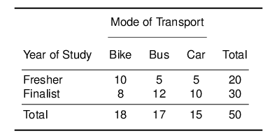
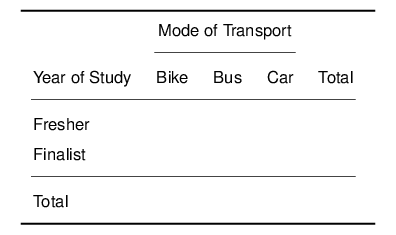

PO91Q: Fundamentals in Quantitative Research Methods –
PO91Q: Fundamentals in Quantitative Research Methods – Bivariate Methods
Self-Assessment Questions12
- Why do we need a test of statistical significance?
- Given an example of a one-sided, and of a two-sided test of significance.
- Can we use continuous variables for cross-tabulations?
- Why is there no dependent and independent variable in correlation analysis?
- Consider the causality framework of Week 5. To what extent are (a) correlation and (b) cross-tabulations able to establish causality?
Please stop here and don’t go beyond this point until we have compared notes on your answers.
Calculations by Hand
I have given you an example of a cross-tabulation in the lecture. Consider the following Table:

Calculate the Expected Values and fill in the following table:

- Calculate the \(\chi^{2}\)-value
- How many degrees of freedom does this table have? Why?
- Using the \(\chi^2\) Table, what is the p-value?
- Are mode of transport and year of study independent in the population?
Applied Exercises in R (Core)
- Open the European Social Survey data, wave 9. Name it conveniently and attach it
- Univariate Analysis (revising weeks 1-2)
- Identify and explore briefly variables about respondents’ happiness, subjective health, age and household’s income (we are going to look at their relationships later)
- What do the values of the income variable mean?
- What is the mode of ‘age’?
- Try to write a function which automatically determines the mode of a variable (more advanced, don’t worry if this beats you. We will discuss this in the seminar.)
- Check the purpose of function round (?round) and, if relevant, apply it appropriately to your results from now onward
- Calculate means, variances and standard deviations when relevant
- Find a suitable plotting function for all four variables
- Crosstabulations
- We suspect there is a relationship between health and happiness. State the null and alternative hypothesis. Take care to correctly specify the dependent and independent variable.
- Cross-tabulate health and happiness, using the table function (search with ‘?’ if needed)
- Apply the ‘addmargins’ function to the previous formula
- Can you read the results? Can you interpret them?
- Display a bivariate plot with the same (search with ‘?’ if needed). What kind of plot do you get? Does this help reading and interpreting?
- Convert the table into percentages. You can use function ‘cprop’ or ‘lprop’ from package ‘questionr’ (you can install the new package through the menu “Tools” in RStudio). Interpret the result. Improve the table as much as you can.
- Conduct a Chi2 test of significance and interpret the result.
- Reorder the levels of Health using the ‘factor’ function with levels argument. Then display the cross-tabulation again.
- Is the relationship still statistically significant?
- Correlation
- Calculate the Pearson correlation between health and happiness (you need to work only with the cases that have positive values for both variables, search the help file for this)
- Does the result confirm your previous conclusion?
- Is the correlation coefficient statistically significant? What does this mean?
- Further Application
- Form the null und alternative hypotheses for the relationship between
- happiness and household income
- happiness and age
- Repeat the crosstabulation and correlation exercises for these two pairs of variables to test your hypotheses.
- Form the null und alternative hypotheses for the relationship between
Applied Exercises in R (Going Further)
There is a lot to choose from this week, take your pick. There is no need to do all of these. Aim for two sections.
Section 1
- Use the ‘prop.table’ function to look at happiness against health in a comparison between genders.Compare genders as precisely as possible.
- Does health drive happiness more for men or women?
- Identify the two countries with lowest and highest happiness
- Compare happiness distributions between these two countries
- What benefit do distributions have compared to just looking at means?
Section 2
- For this section use Wave 7 (2014). Name it conveniently and attach it.
- Calculate the Body Mass Index variable with BMI=weight/height.
- Compare mean and standard deviation of BMI between the UK and Spain
- Apply ‘t.test’ function to test the difference between the two means (note this is now a two-sample t-test)
- Have the inhabitants of one country a significantly better BMI? Do you know why?
Section 3
- For this section use Wave 7 (2014). Name it conveniently and attach it.
- Plot the age at which respondents completed full-time education against the same for their fathers (note that these variables are only valid for the UK sample).
- There might be outlying values – can you see them?
- Plot the same, excluding outlying values
- Is there a significant link between fathers and children regarding this variable?
- Is there a significant link between mothers and children?
- Are these links, if any, stronger for sons or for daughters? Can you interpret?
Solutions
You can find the Solutions in the Downloads Section.